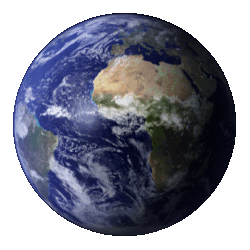
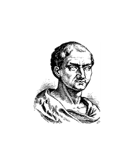
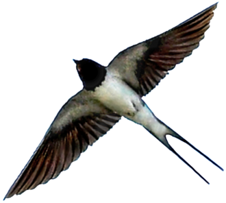
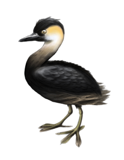

Headers break the document into sections.
Hyperlinks provide a way to go to another page with a single click.
Links can also go to within a page to any tag with an id attribute, like this: go to the links.
The paragraph tag has been one of the most commonly used tags in HTML right from the beginning of the Web. There are also common tags for emphasized and strongly emphasized text. Note that the presentation of the <em> and <strong> tags, while usually reliable, is not guaranteed!
<blockquote>:
Some famous thing that some famous person said, with great and entirely unnecessary prolixity, showing off all the three-dollar words in his (or her) bloated vocabulary and boring everyone listening (or reading).
<sub> and <sup>:
210, ai
<br> and <pre>:
HTML generally collapses white space. Use <pre>
if you
must have
control.
<code> encloses computer code. <var> encloses variables, like this: count = count + 1
An outline is an example of a set of ordered lists, nested inside higher-level ordered lists. Outlines up to four levels deep can be produced in HTML using the type attribute on an <ol> tag.
| Converse classrooms | ||||
|---|---|---|---|---|
| Building | Room | Features | ||
| Picture | Name | Seats | Notes | |
| Kuhn | 212 | 22 | Computer lab |
| 217 | 30 | Data-science classroom | ||
| 203 | 70 | Lever Auditorium | ||
| Phifer | 201 | 15 | |
| 211 | 30 | Lab | ||

4400-HP electric locomotive, built 1963. This was the last mainline electric freight locomotive built in the U.S. for a common-carrier American railroad.



